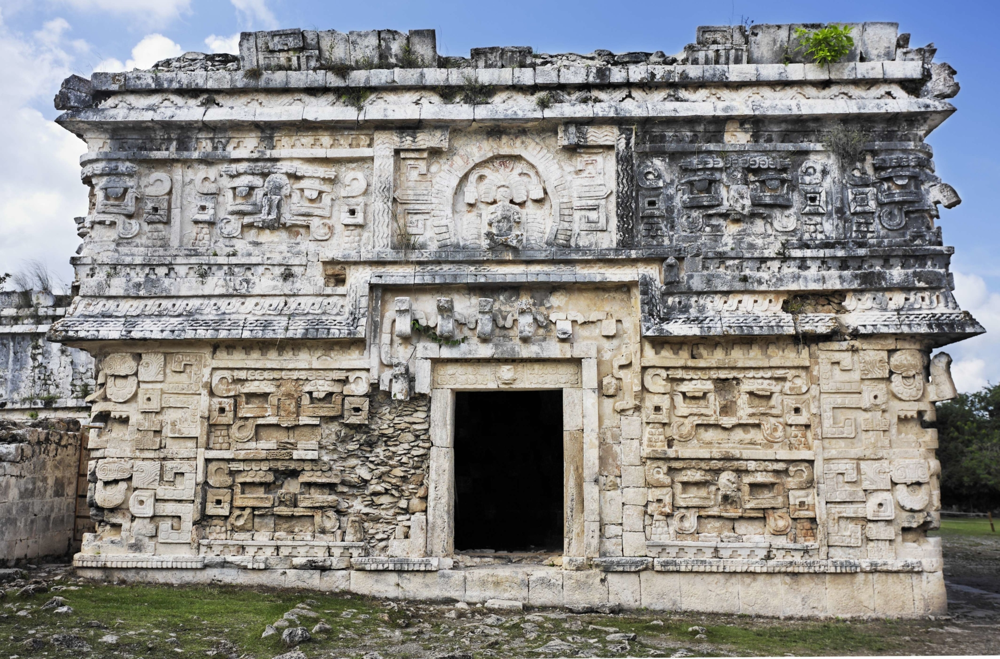
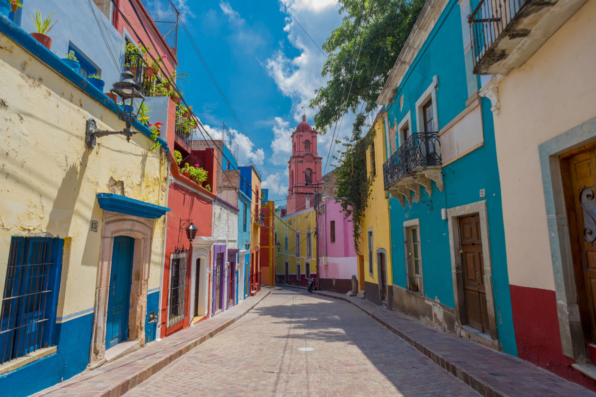
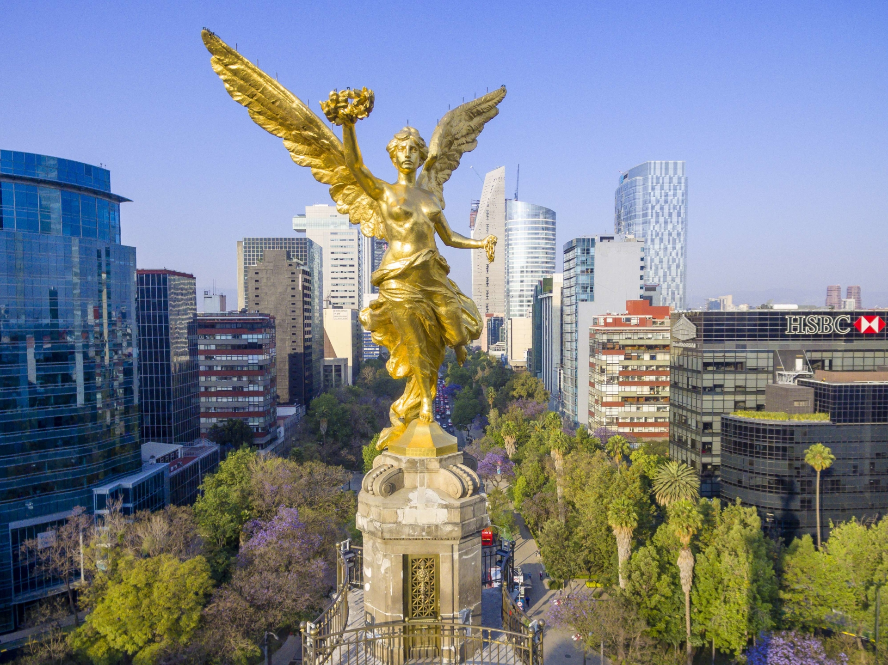

L’Histoire du Mexique, particulièrement riche, peut être divisée en trois périodes majeures. Différents peuples aux cultures diverses se sont succédés jusqu’en 1521, lors de la reddition du dernier empereur aztèque aux Espagnols. Le troisième volet débute à l’indépendance du Mexique en 1821 et dure jusqu’à nos jours
Vers l’an –1500, cette civilisation fut la première à occuper le territoire mexicain. Installés sur les actuels États de Puebla et de Veracruz, les Olmèques possédaient déjà des rites et des techniques de constructions bien établies.
L’origine des Mayas, datée à priori au IVe siècle, reste encore inconnue. À son apogée (entre 600 et 900 après J.-C.), cette brillante civilisation s’étendait principalement sur la péninsule du Yucatán et sur la quasi-totalité du territoire actuel du Guatemala.
L’histoire chronologique de l’ancien empire Maya a pu être établie grâce à des stèles datées par un calendrier extrêmement complexe. Cet outil témoigne des connaissances mathématiques et astronomiques d’un peuple qui avait la « hantise du temps ».
Les Mayas formaient une civilisation très hiérarchisée en « États-nations » à tel point que chaque État disposait de sa propre armée. Ils eurent pour Dieu Créateur, « Kukulcan », le « serpent à plumes » mais également Itzamma (le Dieu Ciel) équivalent de Zeus chez les Grecs. Le dieu Maya le plus populaire fut certainement Chac, le dieu de la Pluie. On peut dire que, d’une manière générale, la religion Maya vénérait la nature.
Vers le Xe siècle, les Toltèques, un peuple venu du nord, envahissent le Yucatán au moment où la civilisation Maya décline. Les Mayas, une population agricole, se remettent difficilement de périodes de sécheresse et de l’appauvrissement de sols épuisés par la culture du maïs sur brûlis. L’arrivée des Toltèques et l’établissement du nouvel empire à Chichen Itza introduisent l’art de l’orfèvrerie et de la ferronnerie. Une nouvelle culture toltèque-maya s’établit en même temps que la pratique courante des sacrifices humains. La révolte des Mayas et la chute de Chichen Itza signent la fin de la suprématie des Toltèques.
Les Aztèques, probables descendants des Toltèques, furent le dernier peuple précolombien du Mexique à connaître une période dorée. Ce peuple de nomades avait pour mission, selon la prophétie de leur dieu Huitzilopochtli, de construire une cité à l’endroit où leur apparaîtrait un aigle dévorant un serpent au-dessus d’un cactus (un symbole que l’on retrouve aujourd’hui sur le drapeau mexicain). L’oracle se réalise en 1325 sur une île du lac Texoco. Les Aztèques y bâtissent alors Tenochtitlan, une cité qui allait devenir la capitale du futur Empire aztèque.
Entre 1517 et 1518, les Espagnols découvrent et explorent la côte est du Mexique. Lorsque débarquent les conquistadors en 1519, les Aztèques règnent en maîtres sur la région, soumettant les populations à l’impôt et enrôlant les hommes dans leurs armées. Impopulaires auprès des indigènes, les Aztèques ont facilité la colonisation espagnole. Le premier à débarquer, le 19 février 1519, fut Hernan Cortès, célèbre conquistador qui fonde la ville de Veracruz. L’Empire aztèque prend fin le 13 août 1521 avec le siège de Tenochtitlan. La ville fut rasée par les Espagnols qui édifièrent à la place la ville de Mexico. Les Espagnols étendent dès lors leur territoire baptisé « Nouvelle-Espagne » qui vient enrichir pour de longues années le royaume d’Espagne.
Après une guerre qui débute en 1810, les Espagnols perdent définitivement le Mexique en 1821. L’insurrection mexicaine commencée à Valladolid gagne peu à peu les principales villes du pays. Après plus de dix années de lutte qui coûtèrent de nombreuses vies, le Mexique acquiert son indépendance. Le 18 mai 1822, Augustin de Iturbide devient le premier empereur du Mexique indépendant.
